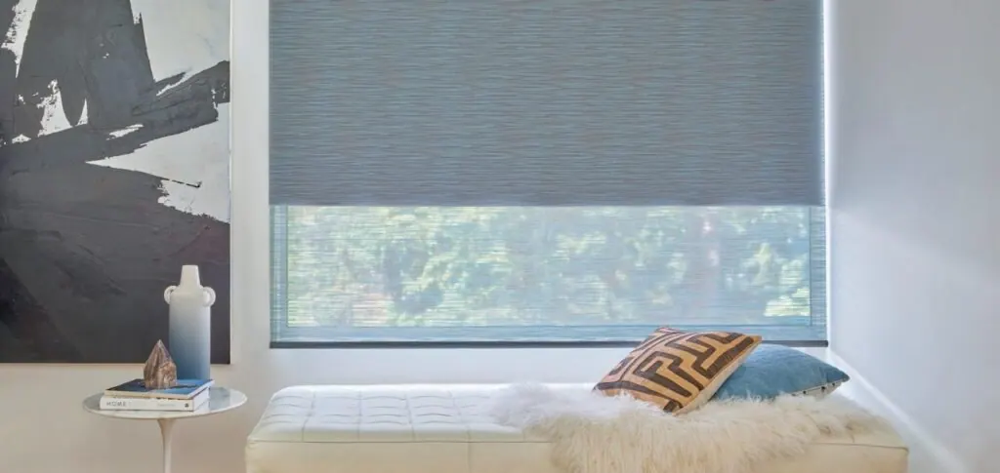
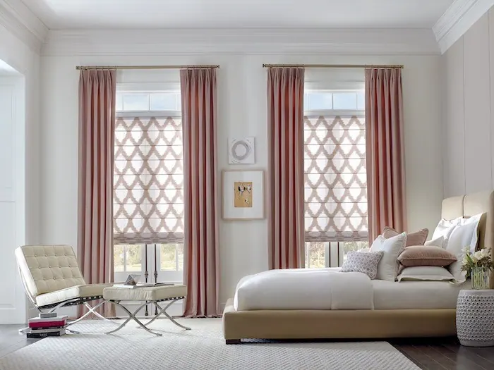
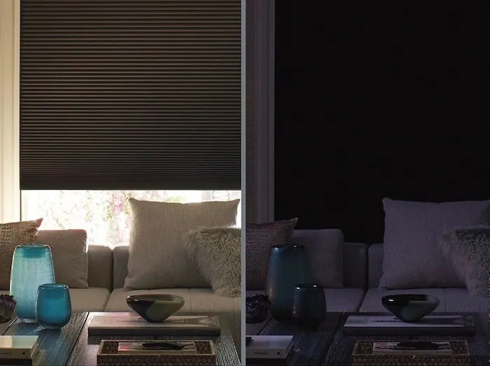
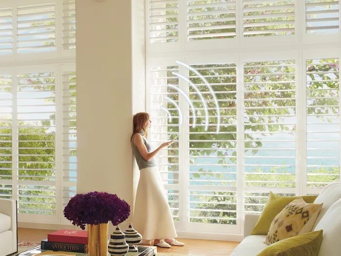
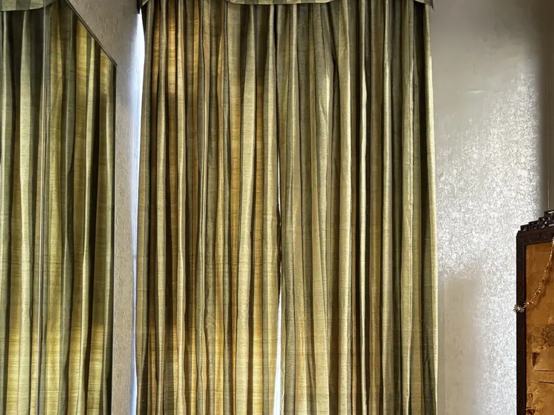
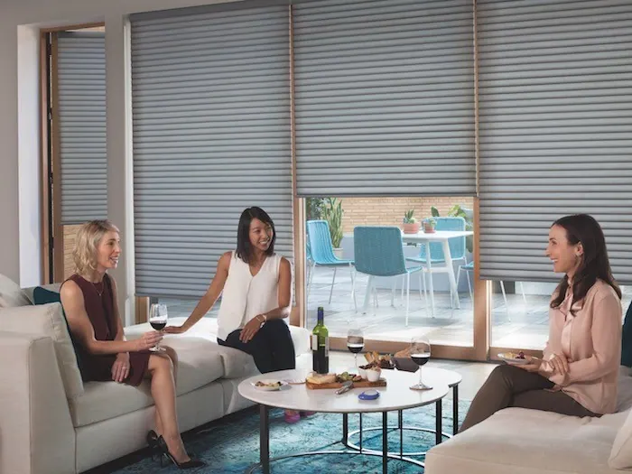
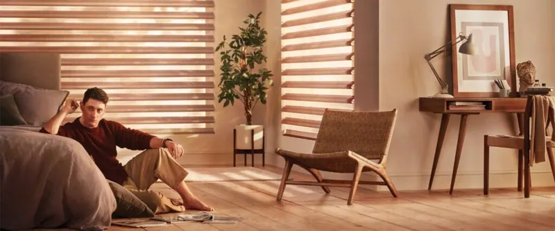

Two shades in one
You no longer need to decide between light diffusion or room darkening and privacy when choosing your next roller shade.
Designer Roller Duolite® Shades from Hunter Douglas set a new design standard with the first-ever double-fabric combination of a light-filtering sheer and a room-darkening opaque liner on a single shade.
Enjoy softly filtered light when you want it and privacy when you need it.
Pirouette® window shadings now with ClearView® sheers
Pirouette® Window Shadings have soft horizontal fabric vanes that float on a sheer backing, allowing you to achieve infinite combinations of light control, privacy and view-through.
With the new Pirouette® ClearView® Shadings, you can maximize those views: They have a specialized sheer that offers a clear view to the outside while transforming the light inside into a comforting glow. For more information, please request a consultation.
New Sea-Tex™ screen shades made from ocean plastic
Hunter Douglas has partnered with Bionic® , a mission driven material engineering company that has established coastal recycling infrastructure in developing nations, to fabricate a yarn that is engineered from recovered coastal and marine plastic. This yarn is the key ingredient for Hunter Douglas' new GreenScreen® Sea-Tex™ screen shade fabric.
The new Sea-Tex fabrics are exclusive to Hunter Douglas' Designer Screen Shades product line, and they are available in five neutral tones, each with a 3% openness. To learn more about this product, please request a consultation.
NewStyle® shutters now with SoftClose™
Beautiful and functional, NewStyle® Hybrid Shutters from Hunter Douglas now have the added convenience of SoftClose™ Louvers. Similar to a feature found in high-end cabinet doors and drawers, the new SoftClose system allows louvers to close gently and automatically after reaching a predetermined angle.
This proprietary design eliminates the need to sweep your hand up or down the louvers to achieve complete closure, providing you with ease of use and functionality.
Discover coordinating side panels
Featuring artful designs for a fully dressed window, the new Design Studio™ suite of products from Hunter Douglas provides ample layering opportunities for vibrant home-décor styling.
The Design Studio family includes four styles: Side Panels, Drapery, and Roller and Roman Shades. Signature fabrics range from sophisticated silk blends and sheers to elegant velvets and jacquards.

The Design Studio™ featured-artist series
In this inaugural series, industry-leading textile artists design fabric collections exclusively for Hunter Douglas' Design Studio™ suite of products. Kicking it off is New York designer Rebecca Atwood. Her collection features a fresh color palette and showcases her love for innovative watercolor techniques.
Known for her best-selling book, Living with Pattern: Color, Texture, and Print at Home, Rebecca Atwood has a keen sense for how to use pattern to transform your home.
As an artist, Rebecca blends traditional techniques with hand painting for her namesake collection of home goods. Her interest in color and pattern is deeply rooted in her childhood on Cape Cod and her everyday observations of life in Brooklyn where she lives with her husband and daughter
LightLock: achieve unparalleled darkness
Fitting securely into the window frame, the Duette® LightLock™ system is the only one of its kind to provide such darkening effects. Its innovative U-shaped side channels feature a black, ridged interior surface that traps and absorbs light of all strengths and from all angles, leaving rooms nearly dark.
Duette® Honeycomb Shades are available in an expansive range of colors, patterns and textures to match any decor. We travel the world to find luxurious fabrics to create window treatments that enhance your interiors while providing superior energy efficiency, light diffusion and privacy.

Voice control your shutters
Palm Beach™ Polysatin™ Shutters now respond to your voice commands when you add PowerView® Automation. That's because PowerView® integrates easily with many other popular smart-home systems, such as Amazon Alexa and Google Assistant.*
*PowerView App and PowerView Hub required; third-party equipment also required for voice activation .

Questions we hear often
Can you help me choose the right window treatment?
Yes. Whether you are shopping for a single window treatment, redecorating your entire house or solving a complex design challenge, we visit your home, look at every window with you and recommend options that fit how you use each room.
Do you measure and install window treatments?
Yes. We take care of measuring and installation. Our experienced installers are fully trained and will ensure a perfect fit for your new window treatments, and they show you how everything works before they leave.
More featured

Design Studio™ from Hunter Douglas
Explore Design Studio™ from Hunter Douglas
PowerView® Automation
Experience light exactly when you want it. PowerView® Automation gives you precise and convenient control of your Hunter Douglas window treatments.
Explore PowerView® Automation
Transform your home with light
Natural light is known to help increase productivity, elevate your mood and even improve your health.
Explore Transform your home with light

Let’s look at your windows together.
A free visit, real samples, and an honest recommendation. No pressure to buy on the spot.